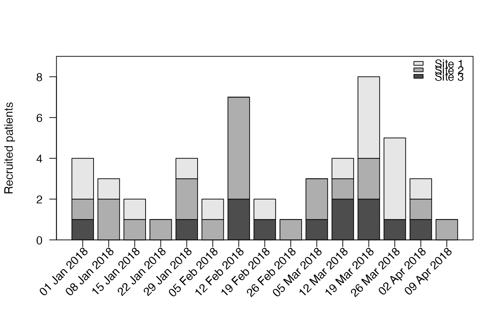
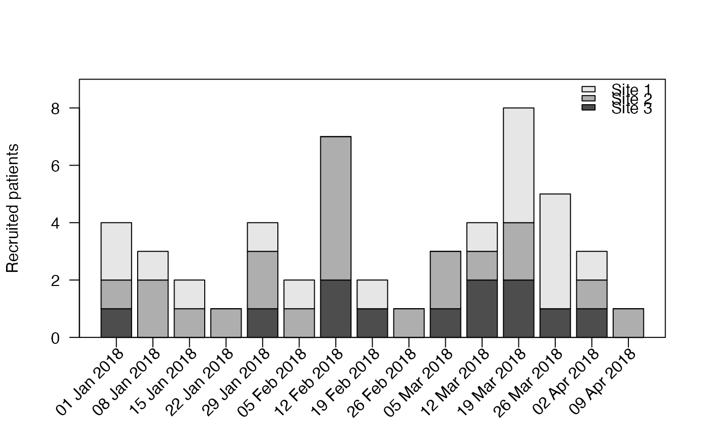
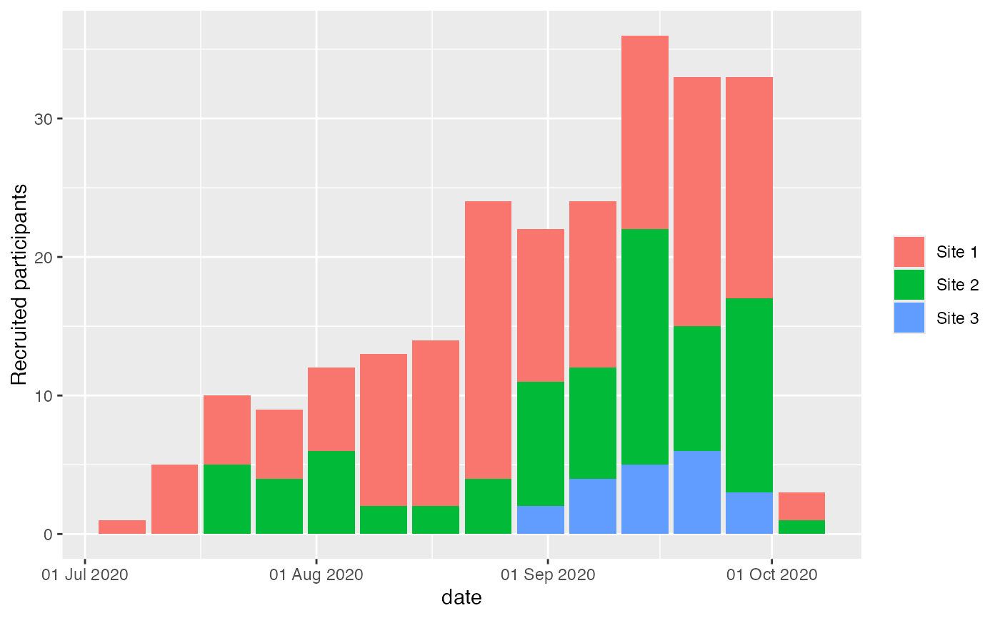
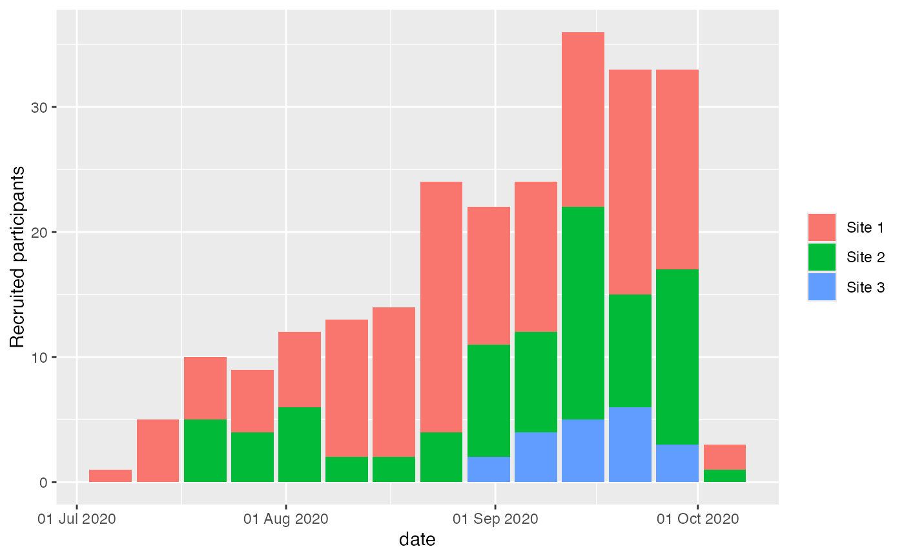

Plot of absolute recruitment by time unit using an accrual data frame produced by accrual_create_df.
accrual_plot_abs(
accrual_df,
unit = c("month", "year", "week", "day"),
target = NULL,
overall = TRUE,
name_overall = attr(accrual_df, "name_overall"),
ylim = NULL,
xlim = NULL,
ylab = "Recruited patients",
xlabformat = NULL,
xlabsel = NA,
xlabpos = NULL,
xlabsrt = 45,
xlabadj = c(1, 1),
xlabcex = 1,
col = NULL,
legend.list = NULL,
...
)
gg_accrual_plot_abs(
accrual_df,
unit = c("month", "year", "week", "day"),
xlabformat = NULL
)Arguments
- accrual_df
object of class 'accrual_df' or 'accrual_list' produced by
accrual_create_df.- unit
time unit for which the bars should be plotted, one of
"month","year","week"or"day".- target
adds horizontal line for target recruitment per time unit.
- overall
logical, indicates that accrual_df contains a summary with all sites that should be removed from stacked barplot (only if by is not NA).
- name_overall
name of the summary with all sites (if by is not NA and overall==TRUE).
- ylim
limits for y-axis.
- xlim
limits for x-axis.
- ylab
y-axis label.
- xlabformat
format of date on x-axis.
- xlabsel
selection of x-labels if not all should be shown, by default all are shown up to 15 bars, with more an automated selection is done, either NA (default), NULL (show all), or a numeric vector.
- xlabpos
position of the x-label.
- xlabsrt
rotation of x-axis labels in degrees.
- xlabadj
adjustment of x-label, numeric vector with length 1 or 2 for different adjustment in x- and y-direction.
- xlabcex
size of x-axis label.
- col
colors of bars in barplot, can be a vector if accrual_df is a list, default is grayscale.
- legend.list
named list with options passed to legend().
- ...
further arguments passed to barplot() and axis().
Value
accrual_plot_abs returns a barplot of absolute accrual by time unit (stacked if accrual_df is a list).
Details
When the accrual_df includes multiple sites, the dataframe
passed to ggplot includes a site variable
which can be used for facetting
Examples
set.seed(2020)
enrollment_dates <- as.Date("2018-01-01") + sort(sample(1:100, 50, replace=TRUE))
accrual_df<-accrual_create_df(enrollment_dates)
accrual_plot_abs(accrual_df,unit="week")
 #time unit
accrual_plot_abs(accrual_df,unit="day")
#time unit
accrual_plot_abs(accrual_df,unit="day")
 #include target
accrual_plot_abs(accrual_df,unit="week",target=5)
#include target
accrual_plot_abs(accrual_df,unit="week",target=5)
 #further plot options
accrual_plot_abs(accrual_df,unit="week",ylab="No of recruited patients",
xlabformat="%Y-%m-%d",xlabsrt=30,xlabpos=-0.8,xlabadj=c(1,0.5),
col="pink",tck=-0.03,mgp=c(3,1.2,0))
#further plot options
accrual_plot_abs(accrual_df,unit="week",ylab="No of recruited patients",
xlabformat="%Y-%m-%d",xlabsrt=30,xlabpos=-0.8,xlabadj=c(1,0.5),
col="pink",tck=-0.03,mgp=c(3,1.2,0))
 #accrual_df with by option
set.seed(2020)
centers<-sample(c("Site 1","Site 2","Site 3"),length(enrollment_dates),replace=TRUE)
centers<-factor(centers,levels=c("Site 1","Site 2","Site 3"))
accrual_df<-accrual_create_df(enrollment_dates,by=centers)
accrual_plot_abs(accrual_df=accrual_df,unit=c("week"))

### ggplot2 approach
data(accrualdemo)
accrual_df<-accrual_create_df(accrualdemo$date)
gg_accrual_plot_abs(accrual_df, unit = "week")
#accrual_df with by option
set.seed(2020)
centers<-sample(c("Site 1","Site 2","Site 3"),length(enrollment_dates),replace=TRUE)
centers<-factor(centers,levels=c("Site 1","Site 2","Site 3"))
accrual_df<-accrual_create_df(enrollment_dates,by=centers)
accrual_plot_abs(accrual_df=accrual_df,unit=c("week"))

### ggplot2 approach
data(accrualdemo)
accrual_df<-accrual_create_df(accrualdemo$date)
gg_accrual_plot_abs(accrual_df, unit = "week")
 gg_accrual_plot_abs(accrual_df, unit = "week") +
ggplot2::theme_classic()
gg_accrual_plot_abs(accrual_df, unit = "week") +
ggplot2::theme_classic()
 #time unit
gg_accrual_plot_abs(accrual_df, unit = "day")
#time unit
gg_accrual_plot_abs(accrual_df, unit = "day")
 #accrual_df with by option
accrual_df <- accrual_create_df(accrualdemo$date, by = accrualdemo$site)
gg_accrual_plot_abs(accrual_df = accrual_df, unit = "week")

gg_accrual_plot_abs(accrual_df = accrual_df, unit = "week") +
ggplot2::scale_fill_discrete(type = c("black", "red", "blue", "green"))
#accrual_df with by option
accrual_df <- accrual_create_df(accrualdemo$date, by = accrualdemo$site)
gg_accrual_plot_abs(accrual_df = accrual_df, unit = "week")

gg_accrual_plot_abs(accrual_df = accrual_df, unit = "week") +
ggplot2::scale_fill_discrete(type = c("black", "red", "blue", "green"))